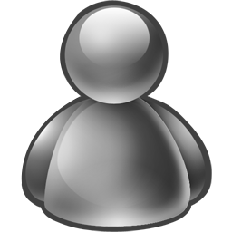

<ion-header>
  <ion-navbar>
    <button ion-button menuToggle>
      <ion-icon name="menu"></ion-icon>
    </button>
    <ion-title>Home</ion-title>
    <ion-buttons end>
      <button ion-button icon-only color="royal" (click)="sendRequest()">
        
      </button>
    </ion-buttons>
  </ion-navbar>
</ion-header>

<ion-content padding class="backgroundPlatzinger">
  <ion-grid id="homeMeContainer">
    <ion-row>
      <ion-col col-3>
        <div class="avatarFrameonline">
          
        </div>
      </ion-col>
      <ion-col col-9>
        Nick <br>
        <small>Subnick</small> <br>
        <small><b>seba.chavez21@gmail.com</b></small>
      </ion-col>
    </ion-row>
  </ion-grid>

  <div class="searchBoxContainer">
      <ion-input type="text" placeholder="Buscar amigo" [(ngModel)]="query"></ion-input>
  </div>

  <div >
    <div>
      <b *ngIf="friends">amigos ({{friends.length}} / {{friends.length}})</b>
    </div>
    <div class="contact-list-item" [ngClass]="{'contact-offline': user.status == 'Offline' || user.status == 'AppearOffline'}" [ngStyle]="{'color': user.status == 'Offline' || user.status == 'AppearOffline' ? 'gray' : 'blue' }" *ngFor="let user of friends | search: query " (click)="goToConversation(user)">
      
      <b>{{user.nick}}</b> <i class="msnicon brb"></i>
      <small *ngIf="user.status">{{user.status}}</small>
    </div>
  </div>
  
</ion-content>
